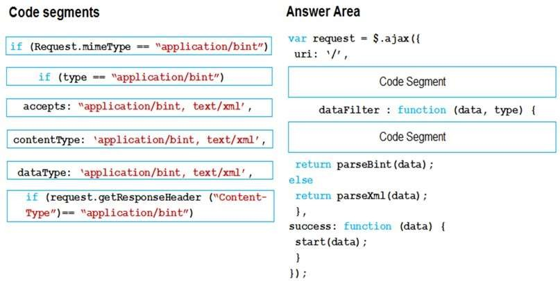
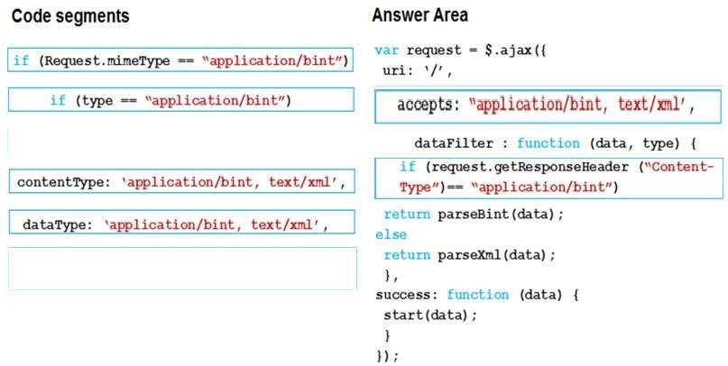

|
DRAG DROP
You are developing a web application that retrieves data from a web service by using the
JQuery JavaScript library.
The data being retrieved is a custom binary datatype named bint. The data can also be
represented in XML. Two existing methods named parseXml() and parseBint() are defined on the page.
You need to develop the application to meet the requirements.
How should you complete the relevant code? To answer, drag the appropriate code segments to the correct targets.
Each code segment may be used once, more than
once, or not at all.
You may need to drag the split bar between panes or scroll to view
content.
NOTE: Each correct selection is worth one point.
Select and Place:
The application must:
-
Retrieve and parse data from the web service by using binary format if possible
-
Retrieve and parse the data from the web service by using XML when binary format is not possible

Correct Answer:

Section: Volume D
Explanation
Explanation/Reference:
Explicación
Fuente: https://api.jquery.com/jquery.ajax/
Definición del método: La descripción es como sigue - este método realiza una petición asíncrona HTTP (Ajax).
Argumentos: del método jQuery.ajax( url [, settings ] )
Argumento 1. - url: es una cadena tipo URL
Argumento 2. - [, settings ]: un conjunto de clave: valor que configura la petición Ajax.
Respuesta:
Primer Segmento de código: accepts: "application/bint, text/xml". No puede ser un
if ya que la definición dice clave:valor, además la idea es obtener datos de un servicio web.
Segundo segmento de código: vemos que es una función anónima que pasa dos parámetros data, type
que verifica primero el type y luego si el tipo es appliacation/bint comienza a obtener los datos con otra
función anónima success
|